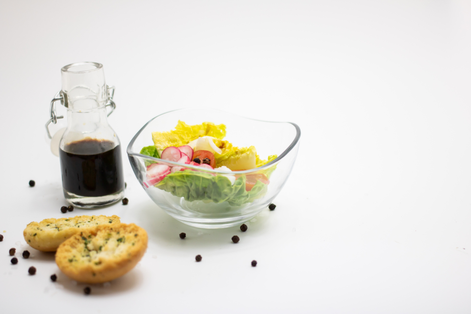
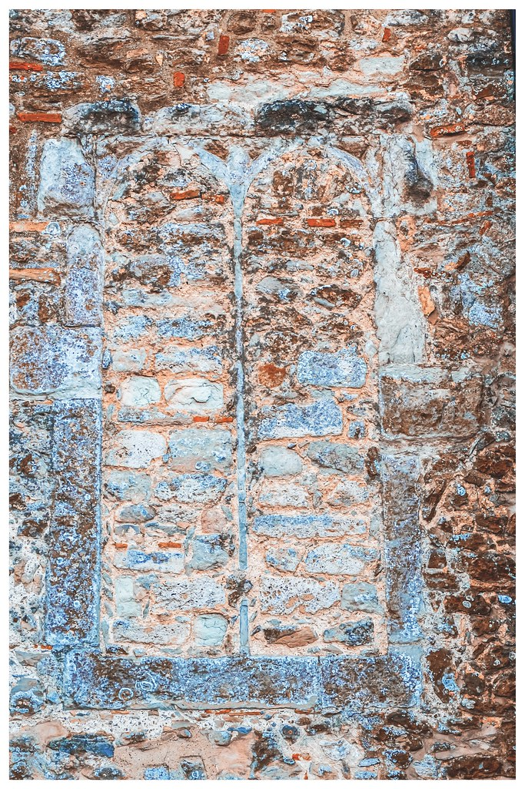

デトックスランチ
野菜たっぷりのサラダに、香ばしく焼き上げた食べ応えのあるチキンと自家製のソースを合わせた一皿。ドリンク付きで、デザートの追加も可能です。
栃木県足利市八幡町 ARCH CAFE
無添加・有機野菜を使った、足利・八幡町のデトックスランチと米粉マフィン。

CONCEPT
ARCH CAFEのある足利市八幡町は、日本最古の学校「足利学校」へと続く道筋、渡良瀬川の水運、そして「足利銘仙」の絣織物で栄えてきた、学問・水・織りという三つの時間が重なる町です。
店名の「ARCH」は、足利学校の門がつくる半円の輪郭、渡良瀬川に架かる橋が描く弧、そして機織りの杼(シャトル)が行き来するときに生まれる軌道――学びと水と織りを静かにつなぐ「通り道」としての弧から名付けました。一つの弧がいくつもの時代をつないできたように、ARCH CAFEも、この町を訪れる方と、からだにやさしい一皿との間に、小さな通り道をつくりたいと考えています。
学問の町として知を重ね、水の町として暮らしを支え、織りの町として手仕事を積んできた足利。その土地の時間の積み重ねに倣い、ARCH CAFEでは野菜を中心とした食材選びと、素材を生かした調理にできるだけ丁寧に向き合っています。からだに負担をかけにくい食材選びを大切にしながら、一皿一皿を通して、この町でゆったりと過ごす時間をご提案します。

COMMITMENT
野菜を中心に、素材そのものの味を感じられる食材選びを大切にしています。
できるだけ手を加えず、素材の持ち味を生かす調理を心がけています。
落ち着いた内装のなかで、気負わずゆったりと過ごしていただける空間づくりをしています。
お水とカトラリーはセルフサービスです。ご来店の際はご案内に従ってお取りください。
VOICE
デトックスランチをご利用のお客様
デトックスランチをいただきました。お野菜たっぷりで、食べ応えのある蒸し鶏を美味しいソースでいただけました。ドリンク付きで800円。デザートを付けると+200円で、ゆったりと自分の時間を持つことができました。お水とカトラリーはセルフサービス。有機野菜を美味しくたくさんいただけて、身体が喜んでいます。また伺います。
ローストビーフプレートをご利用のお客様
食材の値上げが続くなかでも、料理の味は優しくて美味しいです。同じ料理を他のお店で食べたら、値段は倍近くするのではと思うほど。ローストビーフは何枚も重なっていて、ドリンクも付いて1400円とは思えないボリュームでした。ごちそうさまでした、また行きます。
米粉マフィンをご利用のお客様
今はシフォンケーキではなく、米粉マフィンが提供されていました。期間限定のクリスマスマフィンがとても美味しかったです。
シフォンケーキ・ブレンドコーヒーをご利用のお客様
まるごといちじく・スパイシーチャイラテのシフォンケーキセットをいただきました。どちらも美味しいですが、特にスパイシーチャイラテのシフォンケーキはスパイスが効いていて絶品です。ブレンドコーヒーも酸味が合っていて、とても美味しいです。お店の内装も落ち着いていて、とてもくつろげます。
ACCESS
学問の町・足利の記憶を感じる八幡町にあります。お車でお越しの際の駐車場有無は、現在貴店にご確認中です。お電話でのお問い合わせもお気軽にどうぞ。
CONTACT
学びと水と織りの町で過ごす、からだにやさしいひととき。ご来店・お問い合わせは、お電話が一番確実です。お気軽にお声がけください。